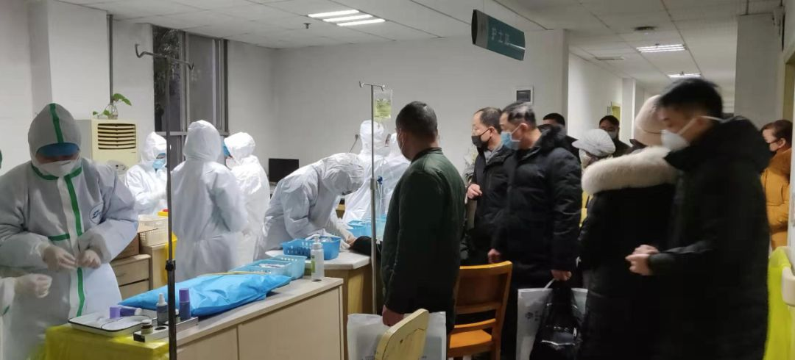
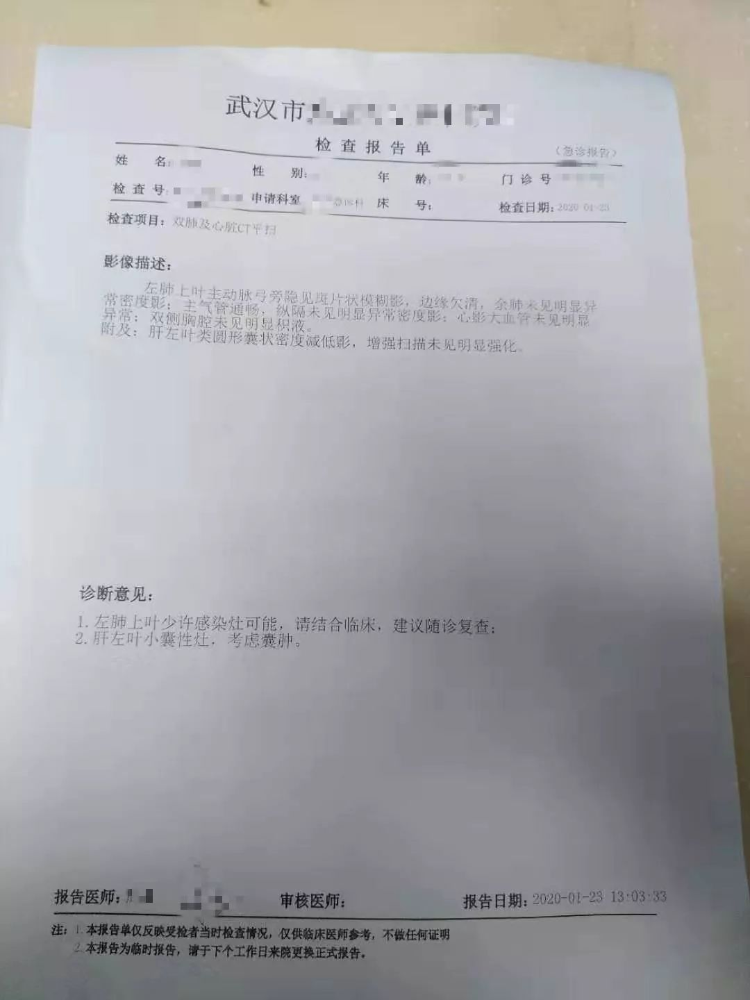

自我隔离的抗疫医生：没人去坐市民的爱心车，骂跑要来陪的女朋友
原文链接 备份链接 采写/胡琪琛 编辑/刘汨 隔离病房贴上了福字 | 长江日报 22岁的黎平安是武汉一家三级医院的医生，在市内公共交通停止运行后，大年三十那天，他走了一个多小时去医院上班。 在黎平安工作的医院，同样面临着物资匮乏的情 …
***** *****
*****
*****那天夜里，从晚上七点，至次日上午八点，她连续接诊200余位输液留观的病人，装备只有一次性外科口罩、帽子、白大褂和手套。**********接诊区患者爆满，病房里床位紧张，设备缺少、防护不够、人手不足。*****

医生的防护服稀缺，穿上后不舍得脱下吃饭上厕所。受访者供图
文 | 新京报记者 杜雯雯
编辑｜陈晓舒
►本文约4125字，阅读全文约需8分钟
1月30日是医生王阳（化名）被独自隔离在家的第7天。发烧还在持续，最高时39℃。睡觉休息、吃药喝水填满日常。
每天中午和晚上，先生会把热乎的饭菜放在楼道走廊里，他走开，王阳才开门取餐。有时是鸡汤，有时是虾，还有番茄炒蛋之类的家常菜。
1月22日，在连续高强度上了十几个小时班后，病毒袭击了这位武汉市某定点医院的医生，胸部CT提示左肺上叶阴影。
那天夜里，从晚上七点，至次日上午八点，她连续接诊200余位输液留观的病人，装备只有一次性外科口罩、帽子、白大褂和手套。接诊区患者爆满，病房里床位紧张，设备缺少、防护不够、人手不足。
1月23日，肺部感染后，王阳被隔离在家治疗观察，但她看到医院内部职工的患病群里，人数一个个增加，从呼吸科、门诊、急诊，到消化科、神经内科、肾内科、手术室，几乎涵盖全院。
新京报记者从多个信源确认，该医院因病被隔离的医护人员至少50人，其中既有新型冠状病毒肺炎的疑似病例，也有只出现发热、腹泻但暂时还未做CT的医护。
“这是我职业生涯里最没有底气的夜班”
********* *********
*********
剥洋葱：你是什么时候发现自己被感染的？
王阳：1月22日，是我们医院被指定为发热患者定点收治医院接诊的第一天。我所在的科室被改造成输液室，那一晚上接诊了200多个输液和留观病人，我负责处理输液病人各种突发情况，那是最困难的一夜。
之前，我接诊过三例疑似病人，可能那个时候就潜伏感染了，当时只有普通的白大褂、外科口罩和帽子，因为那时候医院物资紧缺，只有呼吸科、急诊和重症医学科才配备三级防护，其他科室是二级防护。
1月22日晚上我穿着防护服没睡，都是污染区，没有干净的地方，而且病人很多，根本忙不过来。后半夜我开始头疼、嗓子痛，我就想着可能是说话说多了。
1月23日早上下班回家后，中午出现低热，我就去家附近的医院做检查。我跟医生说，我有疑似病人接触史。后来我的胸部CT显示肺部有斑片状的感染灶，符合疑似病例。我便请病假直接回家隔离休息了。
我算发现得早，开了奥司他韦、头孢克肟等药，回家吃药观察，保证充足休息多喝水。监测体温的变化，如果体温一直升高又出现其他症状就再去医院。

医生肺部被感染的检查报告单。受访者供图
剥洋葱：你是怎样和家里人沟通自己被感染这件事的呢？
王阳：我做CT那天，是我老公陪我一起去的。可能因为我比较年轻，拿到结果后他还是很乐观的，说那刚好在家里休息了，也不用去上班了，我妈妈也可以给我做点好吃的了。
其实早在1月15日左右，接诊到第一例疑似患者，我只有二级防护，我就打电话让父母把孩子从家里接走了，现在就我一个人在家隔离，联系主要靠视频。
剥洋葱：最近几天在家隔离的生活是什么样的？
王阳：还是经常发热，1月27日体温峰值升到了39℃，吃了一些退烧药，28日体温大概是38℃。我家人现在属于在医学观察期，他们属于密切接触者。
院里呼吸科主任说，如果想去住院的话也可以，在家里也行，我自己还是倾向于在家。每天我妈妈做好了饭以后，我老公就把饭送过来，放在楼道里，他走了以后我再开门去取。
剥洋葱：这段时间里，哪一天的工作让你印象最深，能详细描述下吗？
王阳：我们医院作为发热定点医院接诊的第1天，1月22日晚上。
按照原计划，我们应该是1月23日晚上六点以后才开始接诊病人，但是22日下午我们病区改造成输液室，晚上七点就开始接诊病人。那时候病房还没开放，因为隔离病房污染区清洁区有很严格的要求，需要重新改造。病人住不进病房，只能在输液室留观。
实际上我当时没有想到会有那么多病人，按照医院以往的流程，输液医生就是处理下输液病人的突发情况，我觉得是一个比较轻松的活。
但后来人太多，病人情绪也不好，有些病人等了很久不耐烦，就想抢先打针。还有的病人甚至是不适合来输液室留观打针的，已经到呼吸衰竭的程度，必须要上呼吸机了，但是输液室没有呼吸机，病房没有开，呼吸科也是满的。
那一晚上，我提心吊胆，请呼吸内科医生来会诊，但巧妇难为无米之炊，没有呼吸机没有设备，没办法进行处理。这在我职业生涯里面，从来没有上过这么没有底气的夜班。
我们都不敢吃饭，不敢上厕所，吃饭得去清洁区，就要脱掉防护服。但每个人就只有一套，脱了以后再穿就是污染的，很可能感染自己。
上夜班的医生只能早点吃饭，中午接班的医生就早上多吃点，当时网上也说医生不喝水，用尿不湿，都是真的。

医院里等待看病的人。受访者供图
三级防护设备依旧稀缺，尸体拖运工作成首要问题
******************
剥洋葱：你自己对这次的新型冠状病毒的认识过程是什么样的？
王阳：我们医院离汉口、华南海鲜市场其实还是比较远的，隔了一条江，但是病床紧缺，病人就到处辗转医院。
我记得那时另外科室有一个主任说，马上要过年了，要是不把整个武汉的这些病人隔离起来，感染就扩散开了。没想到被他说中了。
剥洋葱：医院从什么时候开始接诊到疑似病人？
王阳：应该是在2019年12月中下旬，这样的病人就陆续开始有了。1月10日左右我感觉就比较多了，医院的呼吸科基本已经满了。
但是呼吸科满了也不一定都是新冠肺炎病人，每年这个时候是呼吸系统疾病高发季节，可能还收了其他的病人。
我是我们科室接触疑似病人最多的，我们科室的三个疑似病人都是由我来接诊收住院的。他们都是消化系统症状，有腹泻、不想吃东西、乏力，但都不发热也不咳嗽。
每个科室都会收到这类疑似病人，他们不是以呼吸症状为首发。心慌、胸闷的去心血管科就诊，来消化内科的是腹泻、乏力、不想吃东西，肾内科收治的可能是透析的病人，他们去做透析，但实际上因为抵抗力、免疫力差，已经合并这一类感染了。
剥洋葱：你们科室的日常接诊能力和防护配备是什么样的？
王阳：像我们科室的话，分为一区和二区，总共是50多张床。消化二区和心血管连在一起，一开始应该是也不主张收这种疑似病人，就怕造成交叉感染，但实际上最后也收了。
我们配备就是医务人员普通的白大褂、手套、一次性的医用外科口罩、一次性的外科帽子，顶多算二级防护。
剥洋葱：从什么时候开始意识到医护人员的防护缺位？现在医院最缺的物资是哪些？
王阳：1月10日左右，呼吸科的重症医学科都已经收不完（病人）了，其他科室都陆续收到疑似病例，就跟医院里面申请要三级防护的装备，但是医院里面确实没有，因为这个时候我们医院急诊的病人量已经呈现井喷式的增长，可以说一两千人堵在急诊。据一个病人自己说，早上就去挂号，晚上十一点才能输到液，已经到这样的地步了。
三级防护装备优先供应发热门诊、急诊，然后是重症医学科和呼吸内科。甚至呼吸内科的护士，我看好像也都是戴的外科口罩，也没有N95的口罩。
神经内科、心血管科都是这种普通的防护，不是说不想三级防护，是没有。现在最缺防护服、护目镜和N95口罩。
剥洋葱：现在有大量的物资已经运抵武汉了，物资稀缺的情况有缓解吗？
王阳： 1月29日，我看到群里发消息，设备科的物资已经不充足了，让科主任、护士长想办法。
剥洋葱：怎么想办法？
王阳：之前各个科室的主任、护士长都会动用自己的私人关系，想办法给大家添一点。私底下也收了一些捐赠的，都是不符合医疗标准的，但这个时候，总比没有强，多穿几件、多戴几层。还有病人没有戴口罩的，也给他戴一个，也算是保护自己吧。

医院里戴着口罩的人在排队。
剥洋葱：现在医院里还在一线工作的同事，面临最大的问题是什么？
王阳：现在最主要的是尸体处理的问题。
以前病人去世，医生护士只需要把仪器从病人身上撤下来，由殡仪馆或者“一条龙”服务的人来处理，都是两个小时内必须拖走。
现在这种病人殡仪馆要求医院要处理过后才收。需要怎么处理呢，要喷洒消毒液在尸体上，死者的嘴里、耳朵、肛门，和外界相通的腔道都要用酒精棉球、纱布塞好，用裹尸布把尸体裹两层，最后抬进两层密封的尸袋，再通知殡仪馆。
但这里面就有两个问题：第一，现在殡仪馆不会马上来拖走尸体，它会集中一个时间点来拖，像医院1月27日的一具尸体，第二天才拖走。
ICU有一天同时好几个病人去世，但是殡仪馆的车也不是马上来，可能人手不够或是其他原因。把尸体滞留在医院里这么长时间影响肯定不好。而且滞留十几、二十个小时也不太安全。
处理尸体的医生护士其实心理压力是非常大，如果那天没有男医生的话，几个女医生根本都抬不动尸体，这些操作说起来好像很简单，真正操作起来是非常困难的。
连死者家属都不愿意、不敢帮忙。
医生护士相当于承担了裹尸员的工作。很多清洁阿姨是临时员工，也不来工作了，护士还得承担清洁病区的工作。我们有同事处理这个真的是心理防线都崩溃了。
几十名同事疑似感染待确诊
**********************
剥洋葱：你提到同事疑似感染人数很多，是什么情况？
王阳：我们医院，医生护士总数可能在三四百人，这次所有临床医护人员都投入战斗了。医院呼吸内科一直都是满的。但实际上我们每个科室基本上都管了病毒肺的病人，所以医护人员有一大批感染的。涉及十几个科室，有手术室的、肾内科、整形美容科、门诊、急诊、呼吸科、消化科、神经内科等。非呼吸科的感染人数反而更多，因为没有三级防护。
但没有办法确诊，我们都在等试剂盒。抽血、临床症状、血常规、胸部CT这些都只能算是疑似的。基本上都休息了，有的是回家隔离，有的是在医院留观，比较严重的直接住院。

这个名为“职工感染之家”的群里人数每天都在增加。受访者供图
剥洋葱：医院疑似感染的医护人员数量这么多，是接诊了所谓的“超级传播者”这样的患者吗？
王阳：不是，我觉得我们交叉感染比较严重。有时候一个医生可能不知道自己已经感染了，都在一个科室里面，值班室是吃睡共用的。
我知道的，整形美容科的医生基本都感染了，他们负责承接门诊急诊的任务，所有科室改造成为发热病房以后，门诊就安排好多科室的人，不然看不完。他们交叉感染比较严重。
现在定点医院又增加了一些，病人缓解一点了，武汉限行了以后也不可能像以前一样井喷似的都往一家医院涌，但之前几个高峰期接诊过大量病人的医院，本身也有个潜伏期。
剥洋葱：被感染的同事，大家关注的是什么？
王阳：我们比较关注什么时候能够确诊，现在答复说已经给我们上报了，等待，但没有确切的时间。
剥洋葱：过去这段时间你感触最深的是什么？
王阳：我是独生子女，我的孩子才一岁半，两边老人身体也都不太好。医院改造成定点医院前，家人劝我不要出门工作。但我们主任告诉我，现在就是战场，不能当逃兵。实际上，我从来都没有想到会有这种进退两难的地步，我就是一个非常普通的人。
现在病人太多了，等我康复了以后，如果核酸检测是阴性，我还是要继续在前线的。因为现在我还是医生，就像打仗的兵一样，不能逃避的，虽然我也很害怕。
*洋葱话题*
*▼*
*你想对医生说什么？*
*后台回复关键词*****“洋葱君” ，加入读者群****
***推荐阅读***

**雷神山值班人员：不知道给多少工钱，不给钱就当是志愿者了
**


卫健委专家曾光：关闭离汉通道为专家组意见，绝对正确

*********既然在看，就点一下吧****** *********
*********
原文链接 备份链接 采写/胡琪琛 编辑/刘汨 隔离病房贴上了福字 | 长江日报 22岁的黎平安是武汉一家三级医院的医生，在市内公共交通停止运行后，大年三十那天，他走了一个多小时去医院上班。 在黎平安工作的医院，同样面临着物资匮乏的情 …
原文链接 备份链接 二月初七（2月29日）。 天又晴了。阴阴晴晴，有点像我的封城日记，开开封封。待在家里时间长了，不知以后出去还习惯否。甚至，还愿意出去否。今天邻居唐小禾老师发了一组东湖的照片，像是无人机所拍，说是近日的。空旷而寂静的东 …
原文链接 备份链接 记者/魏晓涵 实习记者/陈威敬 编辑/刘汨 宋建华 孝感市第一人民医院的医生拆下文件袋作为保护面罩 年初三下午5点，王隆和同事在湖北襄阳去往河南新乡的路上，已经连续开了7个小时车。目的地有一家防护服的生产厂，称可以为他 …
原文链接 备份链接 祁立说现在最大的困难，是发热门诊的就诊人数过多。而一线医务工作者最需要的，是能让患者根据规范的指南分级诊疗，减轻发热门诊和隔离病房不必要的压力。整个采访，他没有表达恐慌和焦虑，只希望传递客观、真实、有价值的信息。 记 …
原文链接 备份链接 我叫张丽（化名），是武汉某医院隔离病房的护士。我们医院从1月6号、7号开始接收新型冠状病毒肺炎病人。 2019年12月31日，我们第一次收到针对华南海鲜市场密切接触人群排查的文件类指令，问我们每一个人有没有去过海鲜市 …